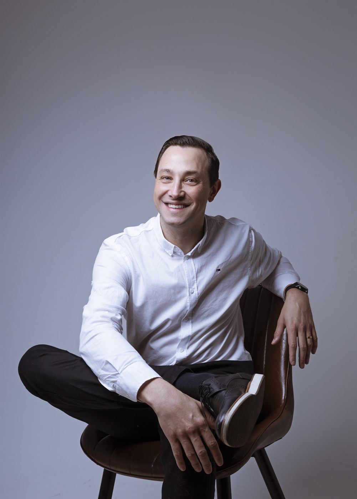

3× Clube dos Samurai
Prêmio Nissan América Latina às melhores concessionárias, conquistado pela VIPCAR (FY16-17, FY17-18 e FY18-19).
Juvenill Ribêiro
Mais de 18 anos no varejo automotivo, conectando vendas, pós-venda e liderança para transformar estratégia em execução e construir resultados sustentáveis por meio das pessoas.
"Estratégia sem execução é só conversa. Resultado nasce do campo, com time, número e senso de urgência."
— Juvenill Ribêiro

Quem sou eu
São mais de 18 anos de trajetória no varejo automotivo, passando por vendas, pós-vendas e liderança de operações de marcas como Nissan, Renault, Kia, Citroën e Peugeot.
Comecei como consultor de vendas e cheguei à diretoria, liderando equipes em diferentes cidades e contribuindo para a evolução de operações, processos e pessoas. Essa caminhada me permitiu participar da construção de resultados reconhecidos entre os melhores da América Latina.
Hoje, compartilho aprendizados práticos sobre vendas, liderança e desenvolvimento profissional, com um propósito claro: transformar estratégia em ação e equipes em resultado.
Marcas por onde passei

Reconhecimentos
Prêmio Nissan América Latina às melhores concessionárias, conquistado pela VIPCAR (FY16-17, FY17-18 e FY18-19).
Entre as melhores operações Nissan do Brasil em gestão e satisfação do cliente.
Bicampeão de Pós-Vendas no Time de Ouro Nissan (FY17-18 e FY18-19) com a VIPCAR.
Destinos das conquistas do Time de Ouro: Cancún (2018) e Chile (2019).
Formação
O que eu faço
Trabalho com líderes e concessionárias que não querem apenas treinar a equipe — querem mudar o patamar de execução do negócio.
Acompanhamento individual para gestores que desejam fortalecer sua liderança, melhorar a tomada de decisão e transformar estratégia em execução com mais clareza, disciplina e consistência.
Diagnóstico, redesenho de processos comerciais e de pós-vendas, e implantação de rotina de gestão com foco em meta e margem.
Programas in-company para vendedores, consultores de serviço e lideranças. Conteúdo prático, calibrado em campo, sem teoria solta.
Sprints de 90 dias com sua liderança para destravar conversão, ticket médio e retenção. Meta clara, rotina afinada, time engajado.
Como eu faço
Vamos a fundo nos números, na operação e na cultura do time. Sem achismo.
Rotina de gestão, metas desdobradas e responsáveis claros. Cada um sabe o que entregar.
Sprints curtas, reuniões objetivas e ajuste constante. Liderança presente no campo.
Formação de pessoas, sucessão e cultura de meta. Resultado que se sustenta.
Programas complementares
Além do acompanhamento de perto, conteúdos para você aplicar onde quiser e quando quiser — uma porta de entrada acessível para começar a transformar resultados hoje.
Guias objetivos sobre vendas, pós-venda e liderança para quem precisa transformar desafios reais em ações práticas.
Acessar os materiaisCursos sobre vendas, pós-venda (em breve) e liderança, estruturados para transformar conhecimento em prática, fortalecer competências e gerar resultados mais consistentes.
Conhecer os cursosAlém do cargo
Antes de qualquer função profissional, sou alguém movido por pessoas, aprendizado e evolução constante. Acredito que resultados sustentáveis começam pela forma como escolhemos viver, trabalhar e construir relações.
Minha esposa, minha filha e meus dogs: Cookie, Hanna e Cherrie ★ são minha base. É ao lado deles que encontro equilíbrio, direção e sentido para continuar evoluindo.
A corrida, a bike e a natação são desafios esportivos que me ensinam que a constância transforma mais do que a intensidade de um único momento.
A espiritualidade me ajuda a cultivar gratidão, manter os pés no chão e compreender que cada pessoa carrega sua própria história.
Honrar a palavra, respeitar o tempo das pessoas, agir com coerência, valorizar as diferenças e tratar todos com dignidade.
"Resultados consistentes não nascem apenas de metas. Eles são construídos com pessoas preparadas, processos claros e liderança presente."
Juvenill Ribêiro
Blog
Reflexões práticas sobre vendas, pós-venda e liderança — direto da experiência de campo.
Por que metas, sozinhas, não bastam — e como pessoas preparadas, processos claros e presença criam resultado que se mantém.
Ler artigoA fidelização não nasce na próxima venda — ela é construída no atendimento de hoje. Como transformar pós-venda em recorrência.
Ler artigoA visão de ponta a ponta que separa quem vende de quem lidera quem vende — e como essa transição transforma a operação.
Ler artigoSeja para acelerar a sua carreira (mentoria) ou destravar os resultados da sua empresa (consultoria), o melhor primeiro passo é um diagnóstico — rápido, gratuito e com um plano inicial na hora.